Cobertura do solo em Mossoró/RN com imagens do INPE (Sentinel-2 e CBERS-4)
e
um classificador Random Forest
Uma cena de satélite tem milhões de pixels. Ninguém classifica isso à mão: o mapa de cobertura do solo precisa ser produzido por um algoritmo.
PRODES e DETER (INPE) mapeiam a perda de vegetação no Brasil inteiro.
Estimativa de área plantada e expansão agrícola, como o polo de fruticultura irrigada do RN.
Quanto de água sobra nos reservatórios do semiárido ao fim da seca.
Onde a cidade cresce e sobre qual tipo de cobertura.
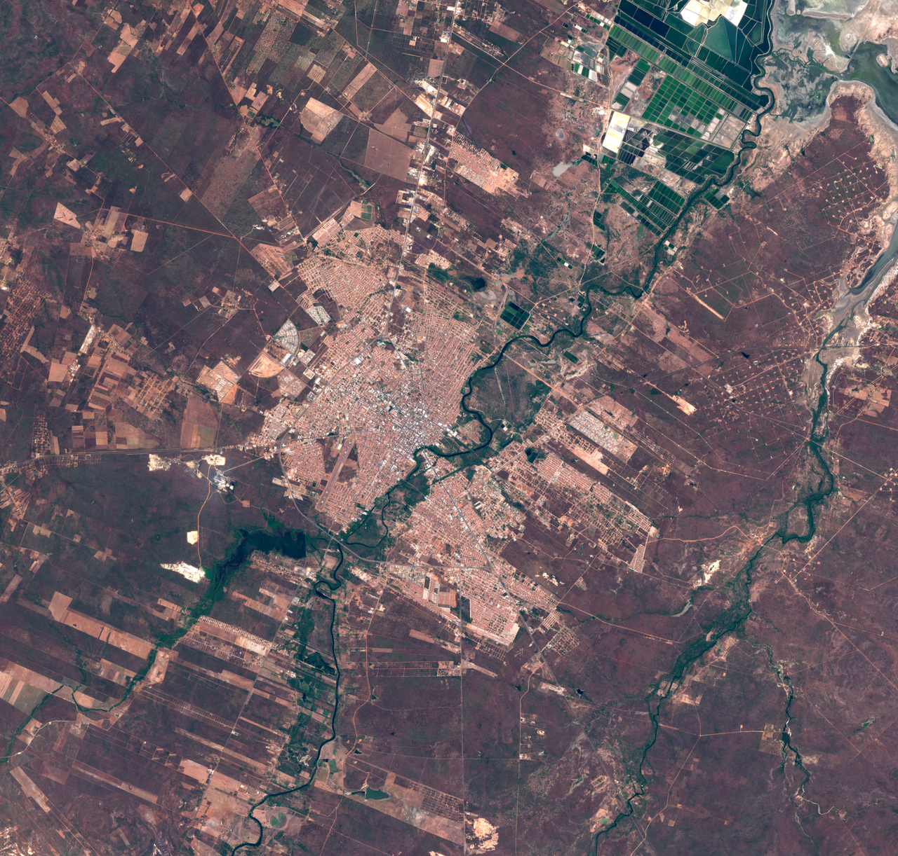
Reflectância média dos pixels de cada classe na cena de Mossoró (10 bandas de superfície do Sentinel-2; B01, B09 e B10 medem a atmosfera e ficam de fora do gráfico).
Um quadrado do terreno (10 m × 10 m) com um valor de reflectância por banda.
Faixa de comprimento de onda medida pelo sensor: visível, infravermelho próximo (NIR), SWIR.
A água some no NIR e no SWIR; cidade e solo são os mais claros no SWIR; a caatinga seca fica abaixo deles.
espacial (10–60 m) · espectral (13 bandas) · temporal (5 dias) · radiométrica (12 bits).
| dado | origem | data | bandas · resolução | papel no trabalho |
|---|---|---|---|---|
| Sentinel-2B MSI · L1C S2_L1C_BUNDLE-1 · tile 24MXV |
INPE · Brazil Data Cube (STAC) | 01/09/2024 | 13 bandas · 10, 20 e 60 m | cena principal: mapa por pixel e por região |
| CBERS-4 MUX · L4 SR CB4-MUX-L4-SR-1 · órbita 149/106 |
INPE · Brazil Data Cube (STAC) | 04/10/2024 | 4 bandas · 20 m · máscara de nuvem | satélite sino-brasileiro: mesmo método, menos bandas |
| EuroSAT MS Helber et al., 2019 · Zenodo |
DFKI · Sentinel-2 L1C | 2017–2018 | 13 bandas · 27.000 recortes 64×64 | classificação da imagem inteira (10 classes rotuladas) |
| ESA WorldCover 2021 v200 · tile S06W039 |
Agência Espacial Europeia | 2021 | 11 classes · 10 m | rótulos de referência dos pixels de Mossoró |
Tudo baixado por script (data_loader.py), pelo catálogo STAC aberto do INPE: data.inpe.br/bdc/stac/v1.
É o mesmo nível de processamento do EuroSAT: o modelo treinado na Europa pode ser aplicado à cena do INPE.
Dados abertos: Copernicus (Sentinel), política de dados do INPE (CBERS), EuroSAT (MIT) e WorldCover (CC BY 4.0).
Por que aqui: num só recorte há cidade, o Rio Apodi-Mossoró, açudes, salinas, agricultura irrigada, caatinga e solo exposto.
Desafio: em setembro a caatinga perde as folhas. Vegetação seca e solo ficam parecidos.
lon −37,45 a −37,22 · lat −5,30 a −5,08
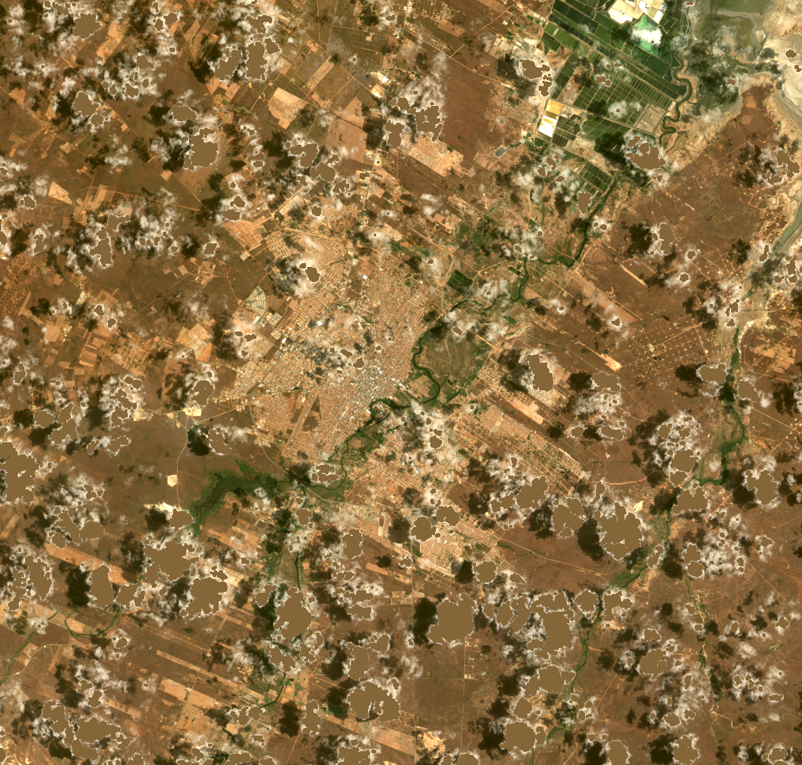
| Vegetação | árvores, arbustos (caatinga), herbácea, áreas úmidas |
| Área agrícola | cropland |
| Área urbana | built-up |
| Solo exposto | bare / sparse vegetation |
| Água | permanent water bodies |
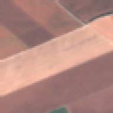
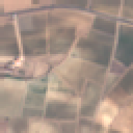
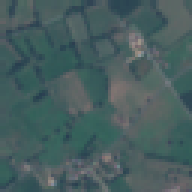
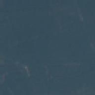
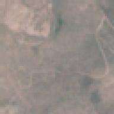
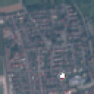
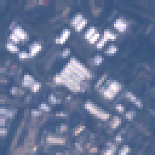
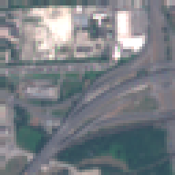
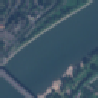
Solo exposto não existe no EuroSAT. Por isso ele só aparece no experimento por pixel; não inventamos rótulos.
data_loader.pybaixa e recorta as imagens
figures.pycomposições, assinaturas
preprocessing.pyreflectância, máscaras
feature_extraction.pybandas, índices, textura
sampling.pydivisão em blocos
train.pyRandom Forest
evaluation.pymétricas no teste
predict.pyclassifica a cena
figures.pyonde e por que erra
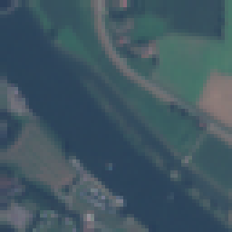
imagem inteiraEuroSAT: 27.000 recortes de 640 m, 10 classes, características por recorte.
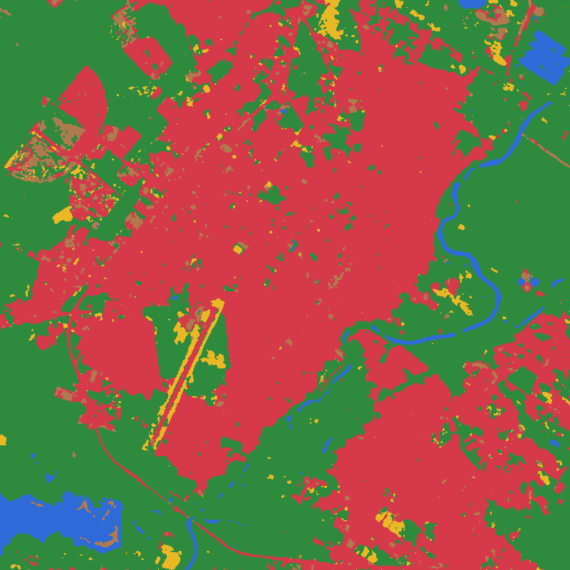
por pixelCena do INPE: 6,2 milhões de pixels, 5 classes, características por pixel → mapa temático.
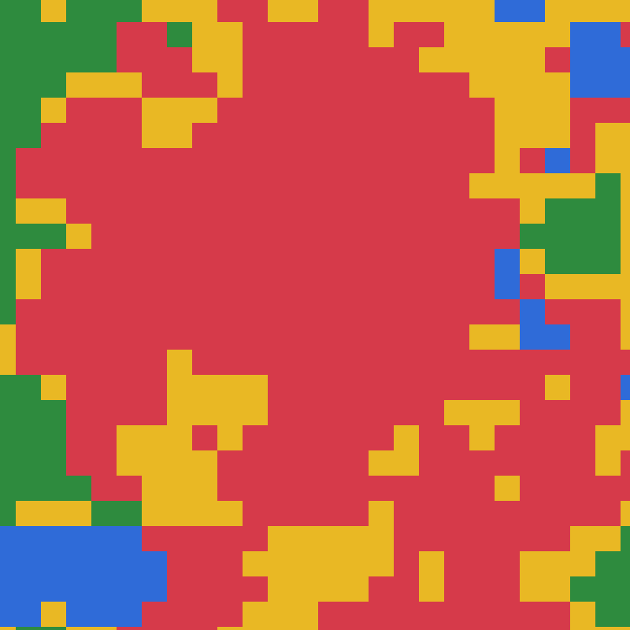
por regiãoModelo do EuroSAT em janelas de 64×64 px sobre Mossoró: mapa em blocos de 640 m.
Azul, verde, vermelho e NIR: detalhe espacial.
Borda do vermelho e SWIR: separam urbano, solo e água.
Aerossol, vapor d'água e cirros: atmosfera.
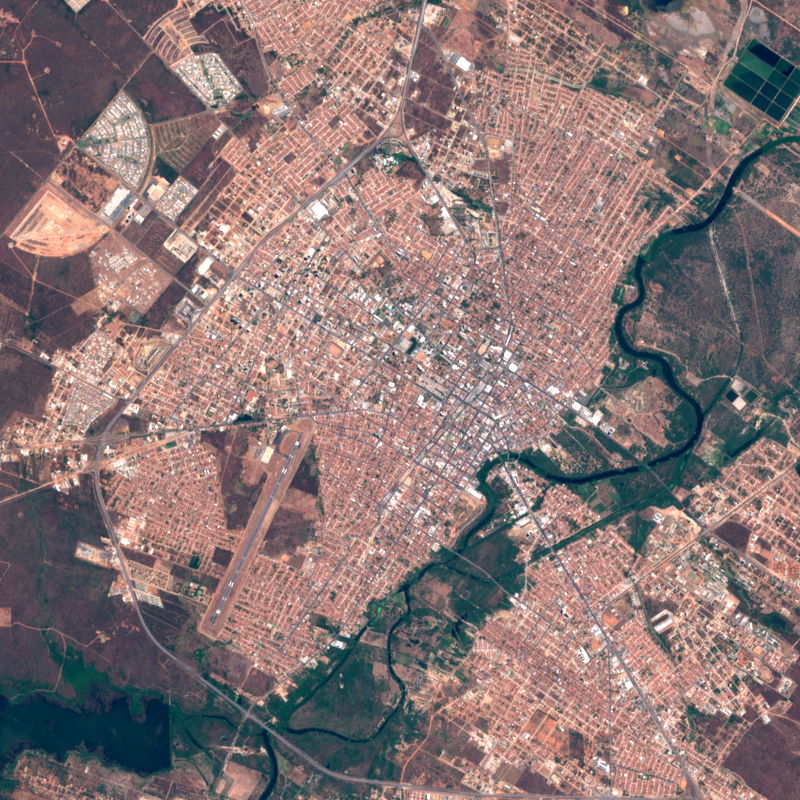
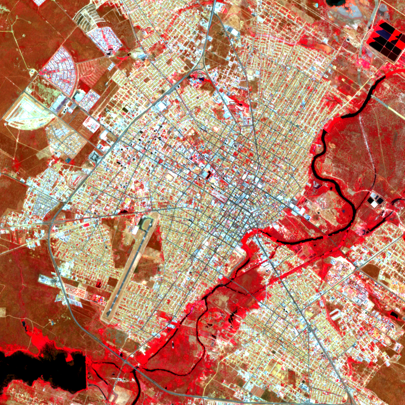
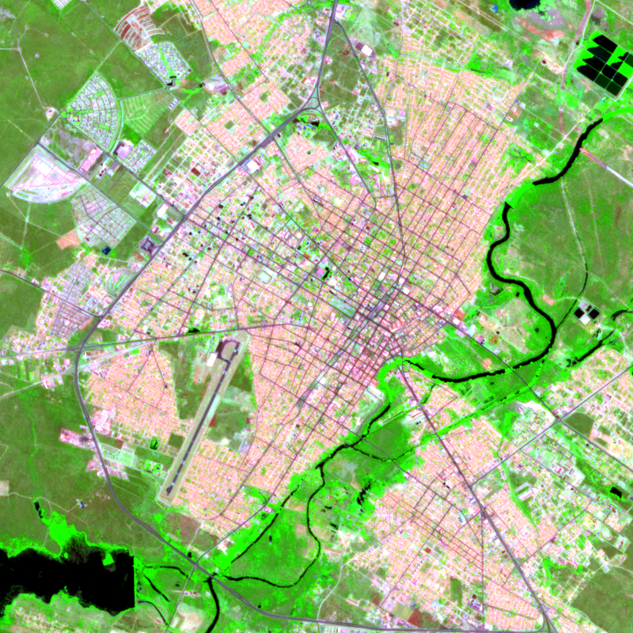
O L1C atual soma 1000 aos números digitais; o EuroSAT, não. Sem harmonizar, toda cena nova pareceria mais clara.
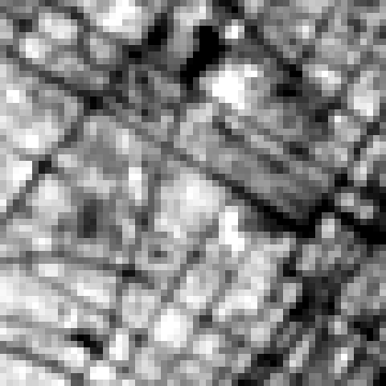
B11 com pixels de 20 m e reamostrada (bilinear) para a grade de 10 m.
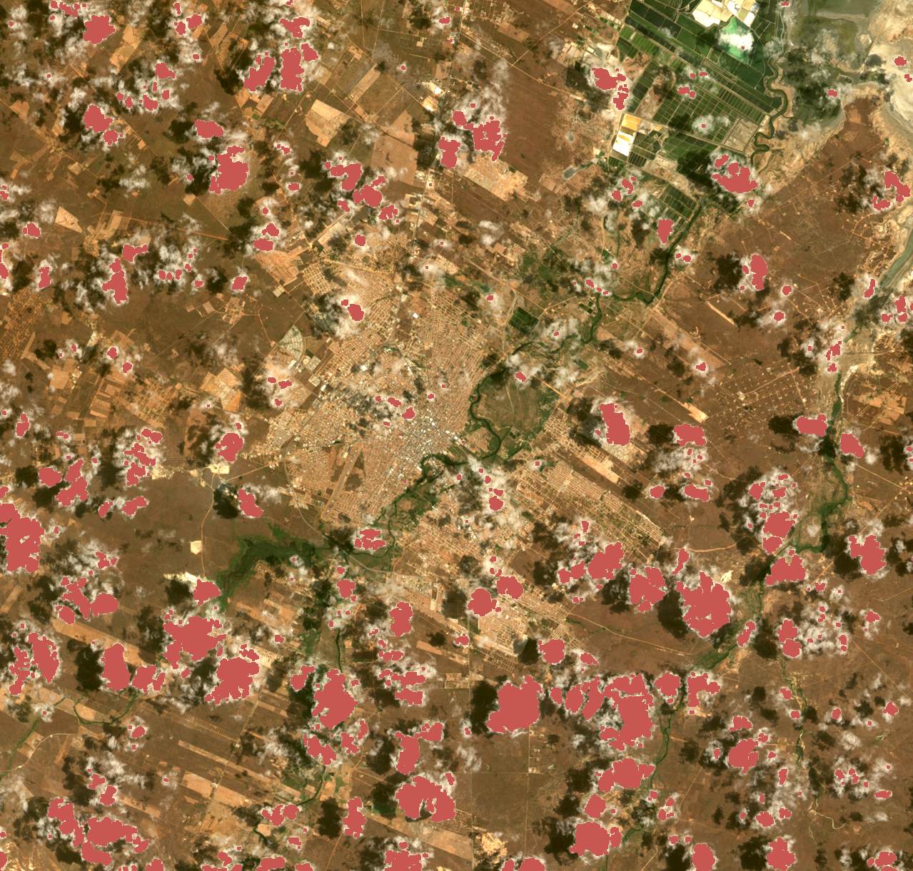
CBERS: bandas + máscara do INPE. 8,7% de nuvens (vermelho) fora do treino e do teste. NaN → mediana; faixa [0; 1,5].
Realce por percentis 1–99% só para exibir.
z-score para SVM e k-NN, calculado só no treino.
Filtro de moda 3×3 depois de classificar (remove "sal e pimenta").
Random Forest dispensa normalização.
Pixels vizinhos são quase idênticos. Se um cai no treino e o outro no teste, o teste mede memória, não generalização.
Cena do INPE: blocos de 1,28 km; cada bloco vai inteiro para um conjunto, com faixa de 2 px descartada na borda.
EuroSAT: recortes agrupados em células de 0,25° (~28 km); os grupos são divididos.
| treino | validação | teste | |
|---|---|---|---|
| EuroSAT (recortes) | |||
| Sentinel-2 (pixels) |
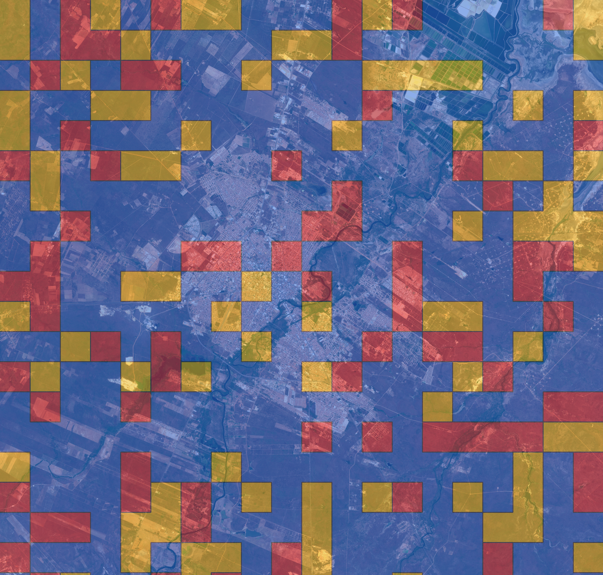
| estatísticas por banda (média, desvio, p10, p50, p90) | 13 × 5 = 65 |
| índices NDVI, NDWI, MNDWI, NDBI, BSI (4 estatísticas) | 5 × 4 = 20 |
| histograma do NDVI | 6 |
| textura: GLCM (4) + gradiente de Sobel + variância local | 6 |
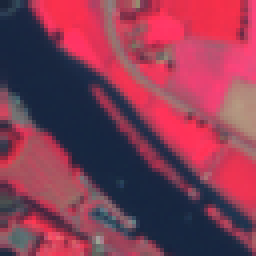
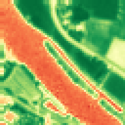
| reflectância de cada banda | 13 · 4 |
| índices espectrais disponíveis no sensor | 5 · 2 |
| contexto 5×5: média e desvio do NDVI e do NIR | 4 · 4 |
O contexto 5×5 dá noção de textura ao pixel: um telhado cercado de ruas tem desvio alto; um açude, desvio quase zero.
Sem NIR (modelo "só RGB") nenhum índice é calculado: o código recusa, não aproxima.
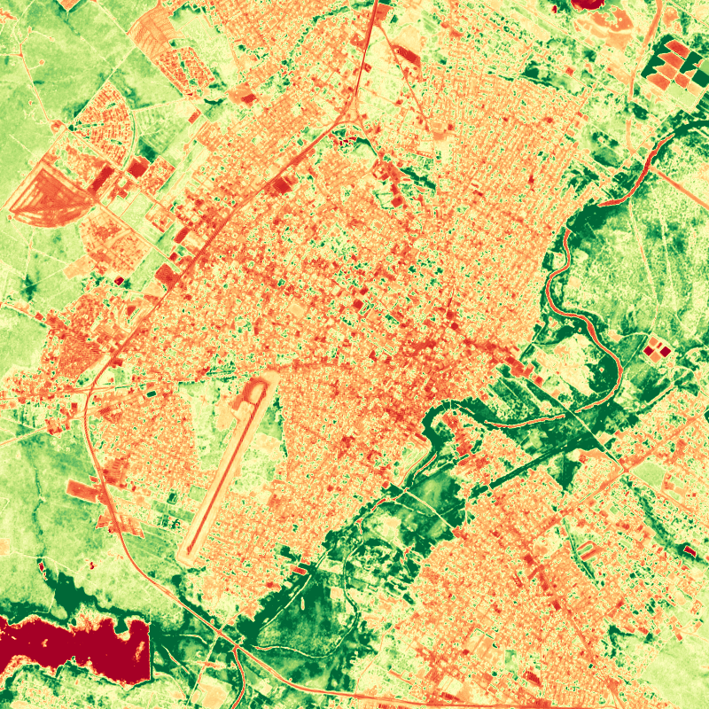
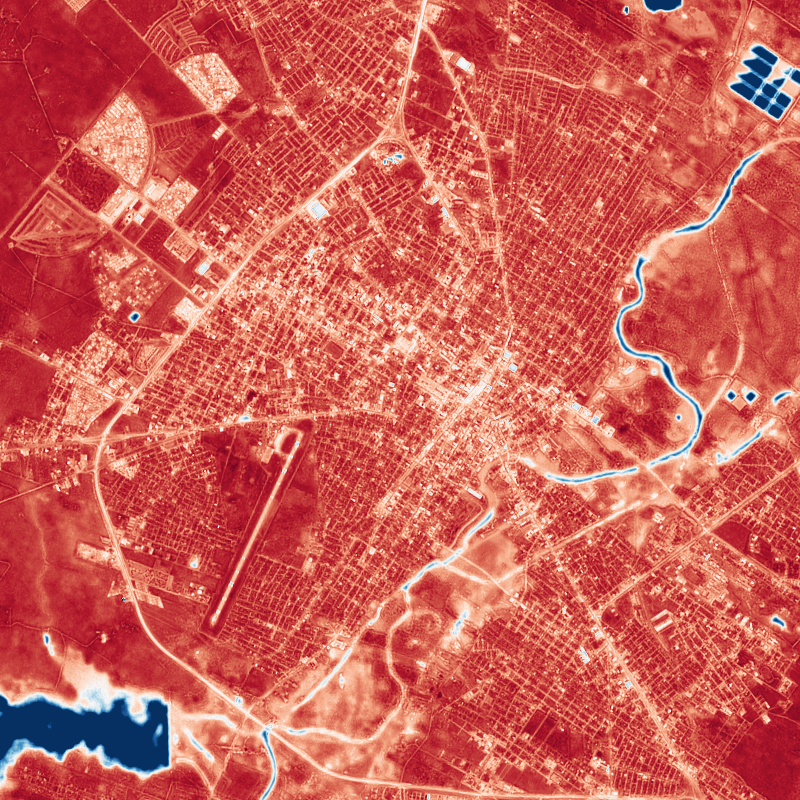
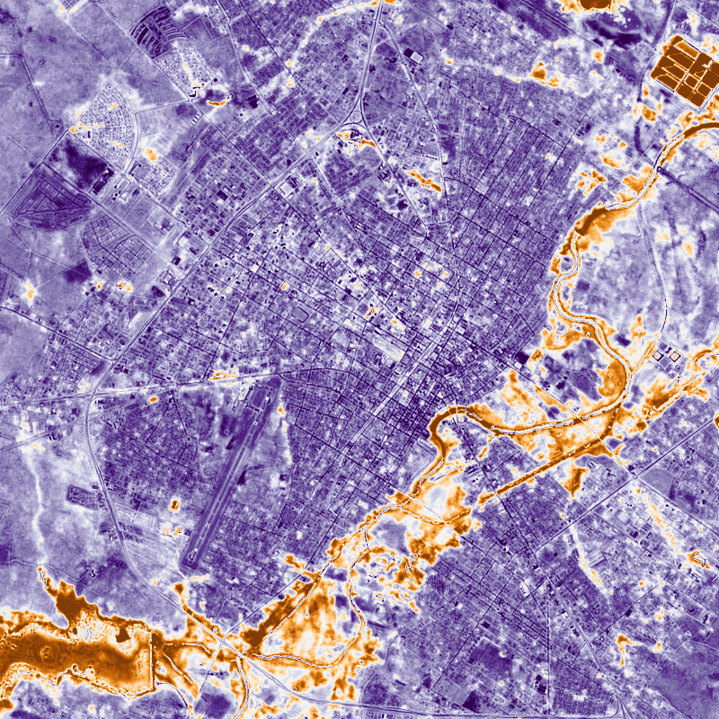
Também calculados: NDWI (McFeeters, 1996) e BSI (solo exposto). O código confere as bandas antes: CBERS-4 → só NDVI e NDWI (sem SWIR); só RGB → nenhum.
NDVI isola a vegetação, mas a agrícola fica no meio.
MNDWI isola a água, mas o solo úmido se aproxima.
Na seca, cidade, solo e caatinga se sobrepõem no NDBI; só a água se destaca.
Importância de Gini do Random Forest (redução média de impureza). Por pixel lideram o NDVI da vizinhança, o SWIR (B11, B12) e os índices de água; no recorte inteiro, textura (gradiente de Sobel, GLCM) vem antes de qualquer cor.
Cada árvore treina numa amostra bootstrap (sorteio com reposição) dos dados.
Em cada nó, só √d características concorrem (max_features="sqrt"): as árvores ficam
diferentes entre si.
A fração de votos é a "probabilidade" que a interface mostra.
Escolhido na validação: sqrt, folha mínima (pixel) · 300 árvores no EuroSAT, 200 nas cenas.
Engana com classes desbalanceadas.
Dos que o modelo chamou de X, quantos eram X.
Dos X reais, quantos o modelo encontrou.
Média harmônica; F1-macro = média das classes.
Acerto além do que o acaso daria.
| experimento | amostras de teste | acurácia | kappa | F1-macro |
|---|---|---|---|---|
| Imagem inteira · EuroSAT, 10 classes | ||||
| Por pixel · Sentinel-2 (INPE), 5 classes | ||||
| Por pixel · CBERS-4 MUX (INPE), 5 classes |
Na cena, 86% dos pixels de teste são vegetação: um modelo que dissesse sempre "vegetação" teria 86% de acurácia e kappa 0. Por isso olhamos o F1 por classe e o kappa.
Leitura: linha = classe real, coluna = prevista. No EuroSAT a maior confusão é cultura anual → permanente; na cena, agrícola → vegetação e água → solo exposto (açudes secos e salinas).
EuroSAT, divisão espacial, mesmas características (RGB: ).
× . Mas prevê ms por mil amostras, contra ms do RF: inviável para 6,2 milhões de pixels.
Dá a importância das características e aceita escalas diferentes.
Mesmo RF, só com as 3 bandas visíveis.
Divisão aleatória de pixels: F1-macro × com blocos. O aleatório é otimista.
Sem SWIR o CBERS-4 não calcula NDBI e confunde cidade com solo exposto.
NIR e NDVI bastam para a classe dominante.
Agrícola e solo exposto têm F1 ≈ 0,4: poucos pixels e referência imperfeita.
Acurácia → · F1-macro →
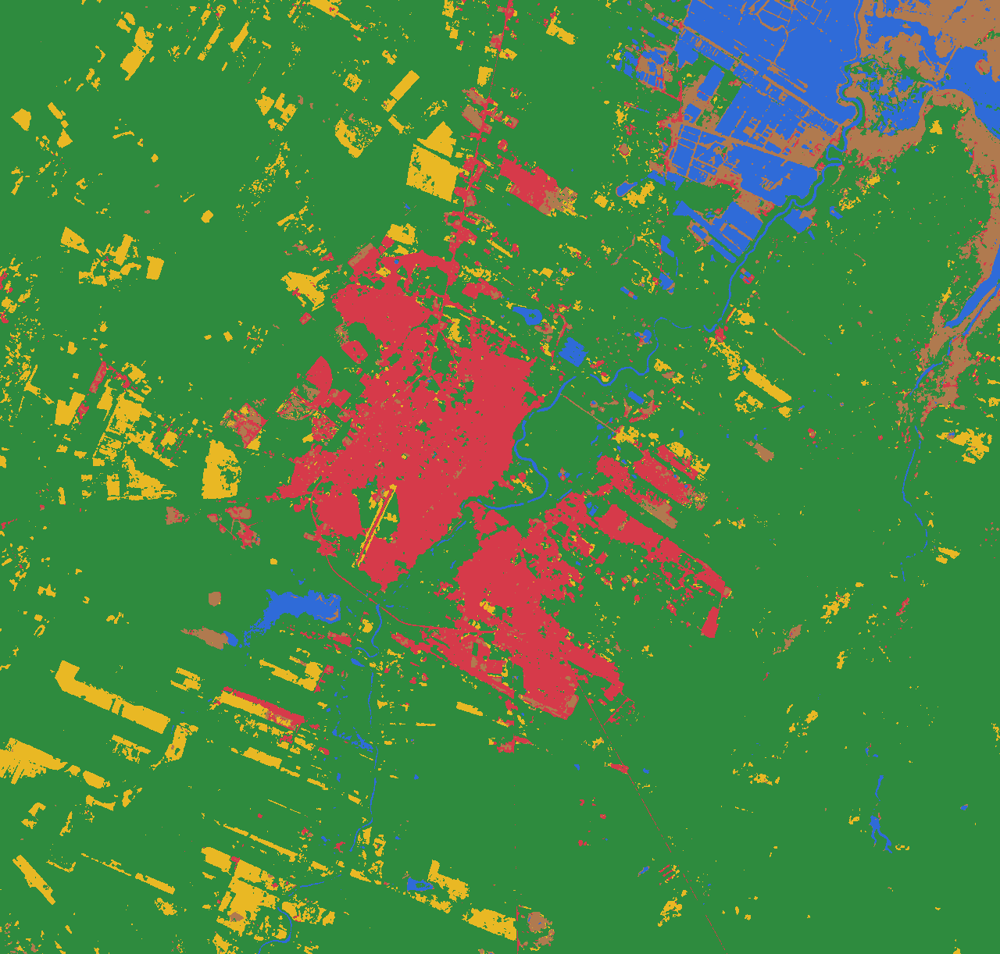
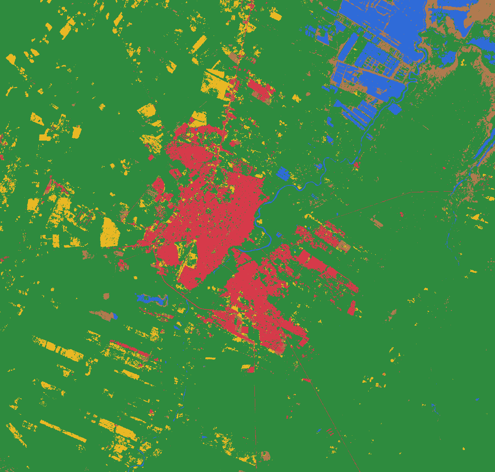
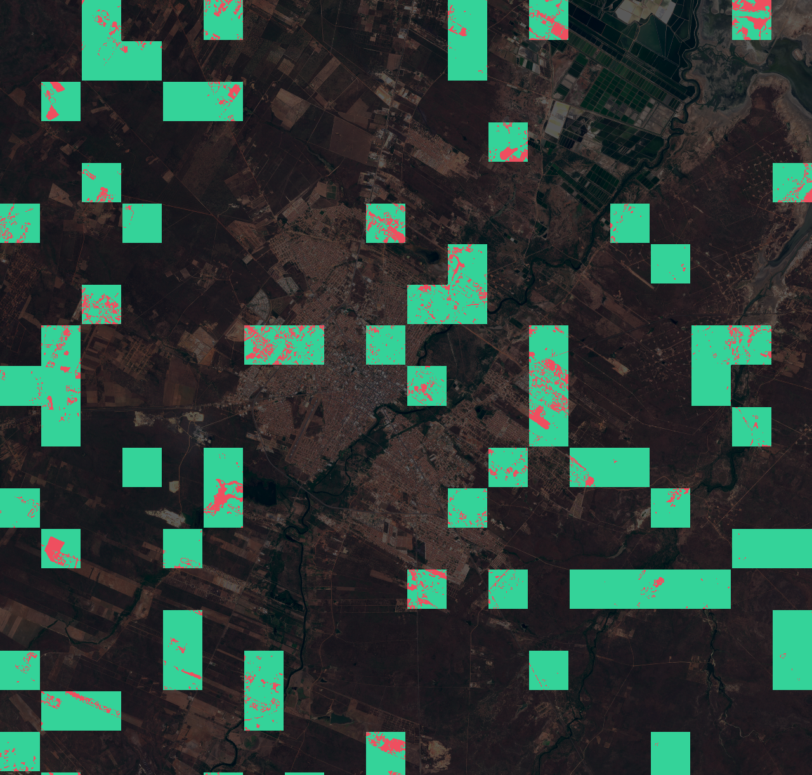
Bordas de quadras e estradas: um pixel de 10 m mistura telhado, rua e árvore.
Referência de 2021, imagem de 2024: açudes secaram, loteamentos surgiram.
Caatinga sem folhas parece agricultura em pousio ou solo.
O WorldCover também é um modelo: a ESA declara cerca de 77% de acurácia global.
No EuroSAT: de acurácia, mas não localiza nada dentro do recorte.
Treinado na Europa, o modelo chama a caatinga de "vegetação herbácea" e "cultura permanente": acerta a cidade, erra o bioma.
Exige rótulos locais, mas desenha rio, quadras e açudes.
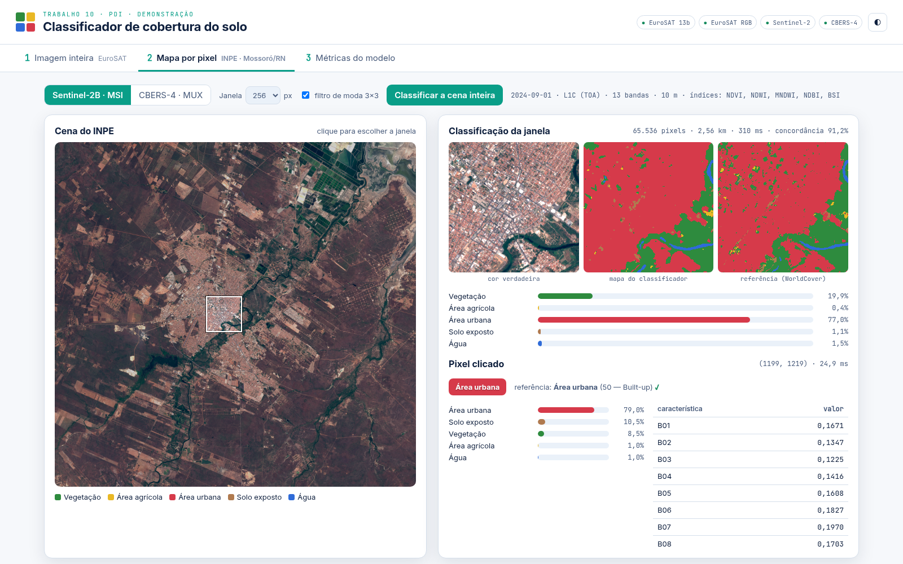
Recortes do teste do EuroSAT (ou envio de GeoTIFF/JPG): classe, votos, NDVI e as características extraídas.
Clique na cena do INPE: a janela é classificada na hora e comparada com a referência; o pixel mostra suas 22 características.
Métricas do teste, matriz de confusão e comparações.
$ python src/app.py → localhost:5000
Com dados abertos do INPE e um Random Forest, a cena de Mossoró virou um mapa de 5 classes com de acurácia e kappa em blocos nunca vistos.
Expansão urbana, volume dos açudes no fim da seca e área irrigada, com imagens novas a cada 5 dias e o mesmo código.
Rótulos vêm de outro modelo (WorldCover 2021); uma só data, na seca; classes raras com F1 ≈ 0,4; o modelo europeu não transfere para a caatinga.
Série temporal (seca + chuva), amostras de campo, referência regional (MapBiomas), CNN nos recortes e validação cruzada espacial completa.
INPE. Brazil Data Cube — catálogo STAC. data.inpe.br/bdc/stac/v1. Acesso em: nov. 2026.
FERREIRA, K. R. et al. Earth Observation Data Cubes for Brazil. Remote Sensing, 12(24), 4033, 2020.
HELBER, P. et al. EuroSAT: a novel dataset and deep learning benchmark for land use and land cover classification. IEEE JSTARS, 12(7), 2019.
ZANAGA, D. et al. ESA WorldCover 10 m 2021 v200. Zenodo, 2022.
ESA. Sentinel-2 User Handbook e especificação do produto L1C. Copernicus.
JENSEN, J. R. Sensoriamento remoto do ambiente. 2. ed. Parêntese, 2009.
ROUSE, J. W. et al. Monitoring vegetation systems in the Great Plains with ERTS. NASA SP-351, 1974. (NDVI)
McFEETERS, S. K. The use of the NDWI in the delineation of open water features. Int. J. Remote Sensing, 17(7), 1996.
XU, H. Modification of NDWI to enhance open water features. Int. J. Remote Sensing, 27(14), 2006. (MNDWI)
ZHA, Y.; GAO, J.; NI, S. Use of normalized difference built-up index. Int. J. Remote Sensing, 24(3), 2003. (NDBI)
GONZALEZ, R. C.; WOODS, R. E. Processamento digital de imagens. 3. ed. Pearson, 2010.
HARALICK, R. M. et al. Textural features for image classification. IEEE TSMC, SMC-3(6), 1973.
BREIMAN, L. Random forests. Machine Learning, 45(1), 2001.
BELGIU, M.; DRĂGUŢ, L. Random forest in remote sensing: a review. ISPRS J. Photogramm. Remote Sens., 114, 2016.
CORTES, C.; VAPNIK, V. Support-vector networks. Machine Learning, 20, 1995.
COHEN, J. A coefficient of agreement for nominal scales. Educ. Psychol. Meas., 20(1), 1960.
LANDIS, J. R.; KOCH, G. G. The measurement of observer agreement for categorical data. Biometrics, 33(1), 1977.
CONGALTON, R. G.; GREEN, K. Assessing the accuracy of remotely sensed data. 3. ed. CRC Press, 2019.
ROBERTS, D. R. et al. Cross-validation strategies for data with spatial structure. Ecography, 40(8), 2017.
PLOTON, P. et al. Spatial validation reveals poor predictive performance of large-scale ecological mapping models. Nature Communications, 11, 2020.
PEDREGOSA, F. et al. Scikit-learn: machine learning in Python. JMLR, 12, 2011. · Rasterio · NumPy · SciPy · Flask · Reveal.js · ECharts.
Perguntas e sugestões são bem-vindas.